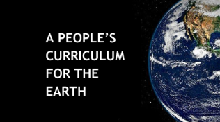

Resources
In addition to A People's Curriculum for the Earth, we will be gathering and developing additional resources teachers can use in the classroom.
Relevance
Working with teachers, we connect students with community groups and local projects so they can see the real-world relevance of their learning and receive school credit.

Support
We bring teachers together to share ideas on how to teach climate literacy. We also arrange for teaching interns and training opportunities.